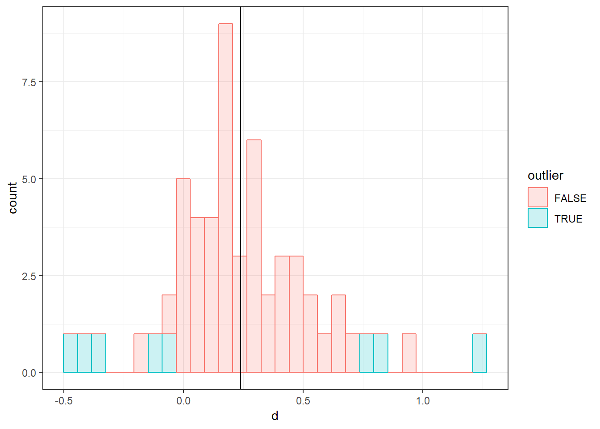

7.3 Detecting outliers & influential cases
As mentioned before, between-study heterogeneity can also be caused by one more studies with extreme effect sizes which don’t quite fit in. Especially when the quality of these studies is low, or the studies are very small, this may distort our pooled effect estimate, and it’s a good idea to have a look on the pooled effect again once we remove such outliers from the analysis.
On the other hand, we also want to know if the pooled effect estimate we found is robust, meaning that the effect does not depend heavily on one single study. Therefore, we also want to know whether there are studies which heavily push the effect of our analysis into some direction. Such studies are called influential cases, and we’ll devote some time to this topic in the second part of this chapter.
It should be noted that they are many methods to spot outliers and influential cases, and the methods described here are not comprehensive. If you want to read more about the underpinnings of this topic, we can recommend the paper by Wolfgang Viechtbauer and Mike Cheung (Viechtbauer and Cheung 2010).
7.3.1 Searching for extreme effect sizes (outliers)
A common method to detect outliers directly is to define a study as an outlier if the study’s confidence interval does not overlap with the confidence interval of the pooled effect.
To detect such outliers in our dataset, the filter function in the dplyr package we introduced in Chapter 3.3.3 comes in handy again.
Using this function, we can search for all studies:
- for which the upper bound of the 95% confidence interval of the study is lower than the lower bound of the pooled effect confidence interval (i.e., extremely small effects)
- for which the lower bound of the 95% confidence interval of the study is higher than the higher bound of the pooled effect confidence interval (i.e., extremely large effects)
Here, i’ll use my m_re meta-analysis output from Chapter 5.2.2 again. Let’s see what the upper and lower bound of the pooled effect confidence interval are:
m_re$ci.lb## [1] 0.1581353m_re$ci.ub## [1] 0.3203839The pooled effect confidence interval stretches from \(g = 0.16\) to \(g = 0.32\). We can use these values to filter out outliers now.
To filter out outliers, we will use a boolean (TRUE/FALSE) filter variable. We first calculate the 95% CI for each study effect size, using the standard error of the effect size (sqrt(vi)). Then, we create a new filter variable outlier, with the value TRUE if the CI of the effect size is outside of the CI of the pooled effect. We use some logical operators here: <, >, and |. The first two mean “smaller than” and “bigger than”, and are probably familiar. THe third one, |, means “or”. So the statement df$upperci < m_re$ci.lb | df$lowerci > m_re$ci.ub means: The upper CI bound of the effect is smaller than the lower CI bound of the pooled effect, OR the lower CI bound of the effect is bigger than the upper CI bound of the pooled effect.
# Calculate CI for all observed effect sizes
df$upperci <- df$d + 1.96 * sqrt(df$vi)
df$lowerci <- df$d - 1.96 * sqrt(df$vi)
# Create filter variable
df$outlier <- df$upperci < m_re$ci.lb | df$lowerci > m_re$ci.ub
# Count number of outliers:
sum(df$outlier)## [1] 8We see that there are eight potential outliers. Let’s examine the effect sizes of these outliers. We can use the df$outlier variable to select only the filtered outliers, and we can request the effect size-related variables to get some idea for whether the outliers are mostly on the positive or negative side:
# Look at effect sizes for potential outliers
df[df$outlier, c("d", "upperci", "lowerci")]Based on this output, it’s hard to determine if the outliers might bias the estimate. Let’s get a graphical representation of the histogram for the effect sizes, with different colours for the flagged outliers. For this, we will use the popular plotting package ggplot2, which can build any possible plot in cumulative steps:
# Load ggplot
library(ggplot2)
# Make a basic plot, based on the data in df, and specify that the x-variable is
# the effect size, 'd', the colour and fill of the histogram bars are based on
# the value of 'outlier':
ggplot(data = df, aes(x = d, colour = outlier, fill = outlier)) +
# Add a histogram with transparent bars (alpha = .2)
geom_histogram(alpha = .2) +
# Add a vertical line at the pooled effect value (m_re$b[1])
geom_vline(xintercept = m_re$b[1]) +
# Apply a black and white theme
theme_bw()## `stat_bin()` using `bins = 30`. Pick better value with `binwidth`.
It looks like the potential flagged outliers are pretty uniformly distributed. Thus, there is no clear indication of bias.
Note that we can plot essentially anything using ggplot, so it’s an extremely useful package for understanding your data visually.
7.3.2 Sensitivity analysis
We can also do a sensitivity analysis, to check how much the pooled effect size changes if we omit all potential outliers:
m_no_outliers <- rma(yi = df$d[!df$outlier],
vi = df$vi[!df$outlier])
# Print the rounded pooled effect and CI
cat("G = ", round(m_no_outliers$b[1], 2),
", 95% CI [", round(m_no_outliers$ci.lb, 2),
", ", round(m_no_outliers$ci.ub, 2), "] (no outliers)", sep = "")## G = 0.22, 95% CI [0.17, 0.27] (no outliers)cat("G = ", round(m_re$b[1], 2),
", 95% CI [", round(m_re$ci.lb, 2),
", ", round(m_re$ci.ub, 2), "]", sep = "")## G = 0.24, 95% CI [0.16, 0.32]Again, the conclusion is that these outliers hardly bias the pooled effect.
References
Viechtbauer, Wolfgang, and Mike W-L Cheung. 2010. “Outlier and Influence Diagnostics for Meta-Analysis.” Research Synthesis Methods 1 (2). Wiley Online Library: 112–25.